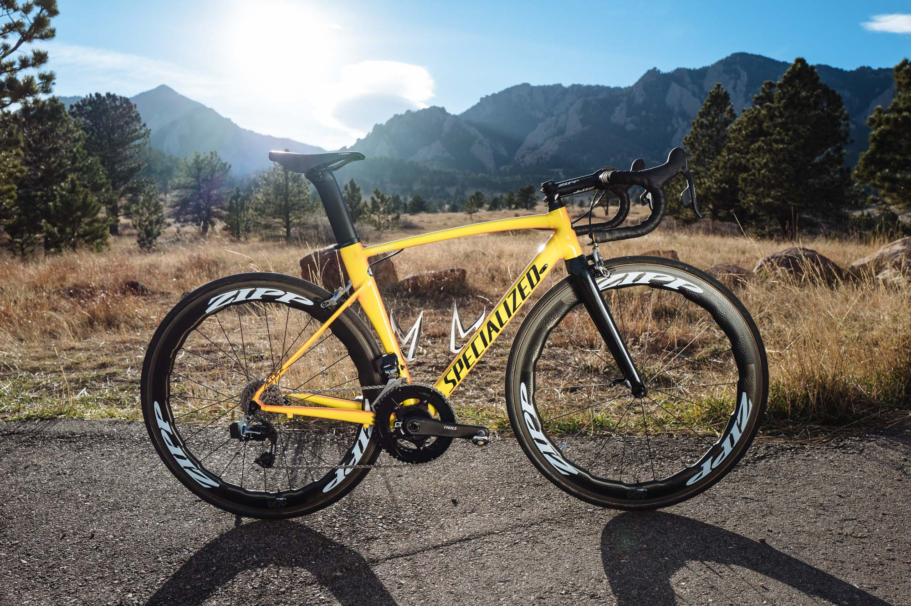

在碳架公路车已经在赛场上占据绝对主流的今天，偶尔还是会有职业车队为了曝光赞助商的新产品而在一些无关痛痒的比赛中由个别副将象征性的使用一下铝架赛车，而美国的 Hagens Berman Axeon 洲际职业车队在 2018 赛季做出了惊人的选择 —— 全队在所有比赛统一使用 Specialized Allez Sprint Comp 铝架赛车！事实上该车队本赛季的成绩非常不错，已经取得了包括列日-巴斯通-列日U23组冠军和美国老牌赛事环吉拉（Tour of the Gila）两个赛段冠军在内的8场胜利！其实我也说不出这个事情能说明啥……你们觉得呢？